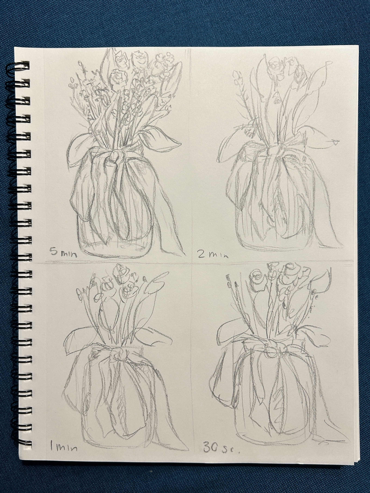
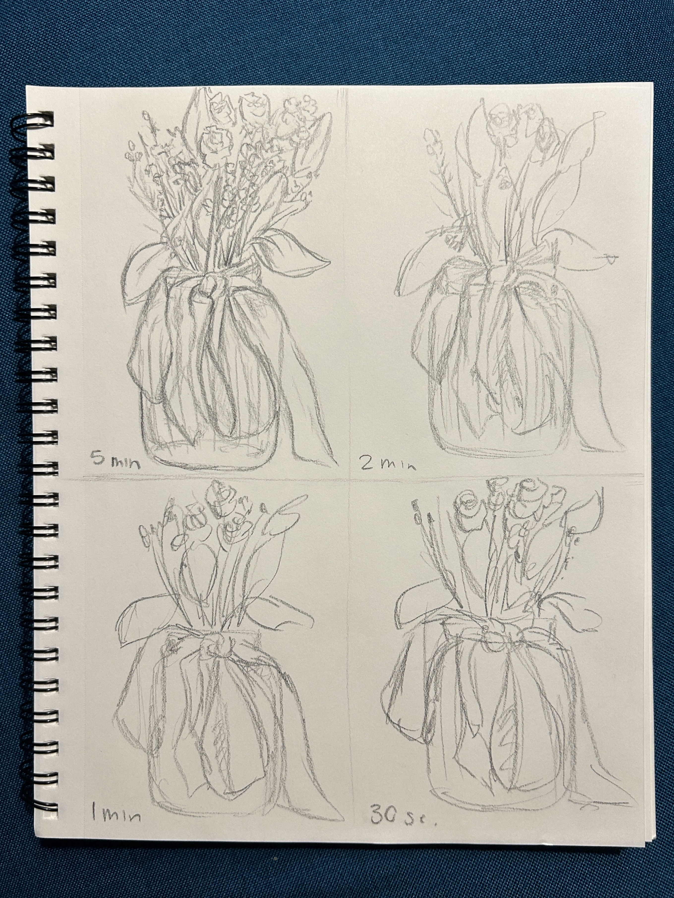

An important part of my artistsic journey is keeping a sketchbook which I can draw anything that inspires me on a smaller scale. This year the majority of my sketchbook submissions correlate with my Drawing 1 class. Here are a few of them:
Sketchbook #1 = Dried Flowers in 5 minutes, 2 minutes, 1 minutes, and 30 seconds
 
